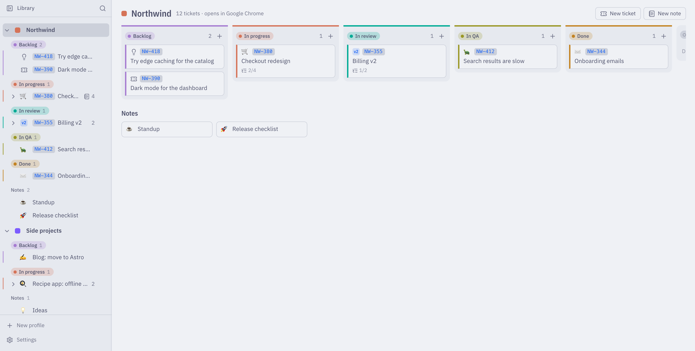
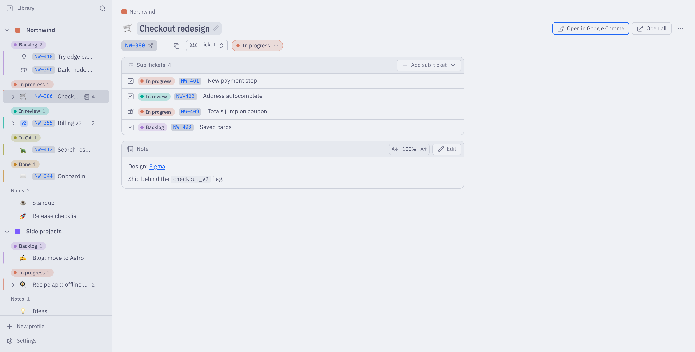
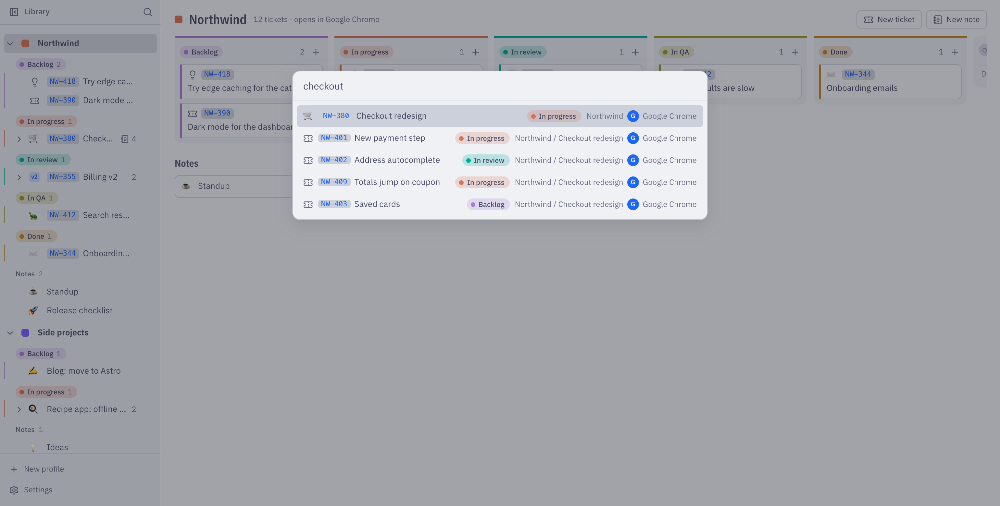

Your tickets, one click from their tabs
Keep what you are working on in profiles such as Work, a client or Personal. Move tickets through statuses you name, keep notes next to them, and open each one in the browser its profile uses. If the tab is already open, Tabstage takes you to it. For macOS and Linux, no extension needed.
curl -fsSL https://de-hv.github.io/tabstage/install.sh | sh
With Homebrew: brew install --cask de-hv/tap/tabstage

Statuses you name
Backlog, In progress, In QA, Done, or whatever your team uses. Each profile is a board with one column per status, and the sidebar groups tickets the same way. Drag a ticket to move it along.
Tickets inside tickets
Break a ticket into sub-tickets, mark each as a task, bug or spike, and give it a key such as NW-401, an emoji or an icon. A sub-ticket in another status is flagged, so nothing gets lost.
Notes next to the work
Every ticket has a Markdown note, and every profile has its own notes for standups, checklists or ideas.
No duplicate tabs
On macOS, with Safari and Chromium browsers, a click takes you to the tab you already have open. Other browsers get a new tab.
Find anything fast
Press ⌥⇧K from any app, or ⌘K in the window, to search every ticket and note and open it.
Your data, in one file
Everything lives in one JSON file in a local folder you choose on first run. Nothing leaves your computer.


Other ways to install
- Linux, as a system package
curl -fsSL https://de-hv.github.io/tabstage/install.sh | sh -s -- --system- A specific version
curl -fsSL https://de-hv.github.io/tabstage/install.sh | sh -s -- --version v0.1.0- Uninstall
curl -fsSL https://de-hv.github.io/tabstage/install.sh | sh -s -- --uninstall